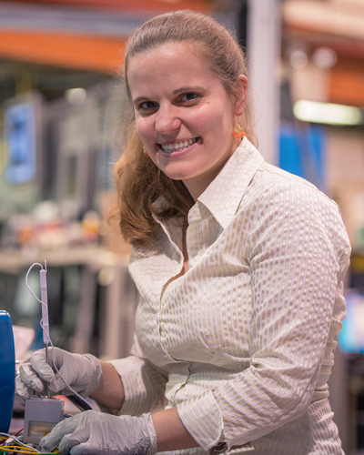

Keynote Speakers
 |
Pending
Laboratoire d'Electrochimie Moléculaire (LEM)
UMR CNRS - Université Paris Diderot - Paris France
|
|  |
In situ Synchrotron-based X-ray Microscopy on Energy Storage Materials
Stanford Synchrotron Radiation Lightsource
SLAC Accelerator Laboratory Standford University
|
 |
Computational and Theoretical Chemistry: Powerful tools for a Rational Design of Electrode Materials for Li-ion Batteries
Université Montpellier 2
Institut Charles GERHARDT - CNRS 5253 France
|
 |
Atomistic and coarse-grained modeling of Li-ion batteries |
 |
Overview of macroscopic modelling for Li-ion batteries on the basis of porous-electrode theory
University of Waterloo
Chemical Engineering
Canada
|
 |
Mutiparadigm and multiscale computational modeling of rechargeable batteries: from theory to practice
Université de Picardie Jules Verne
Laboratoire de Réactivité et Chimie des Solides (LRCS)
France
|
|
Development of innovative battery materials and next generation battery systems at BASF
BASF
Tucson, AZ (USA)
|